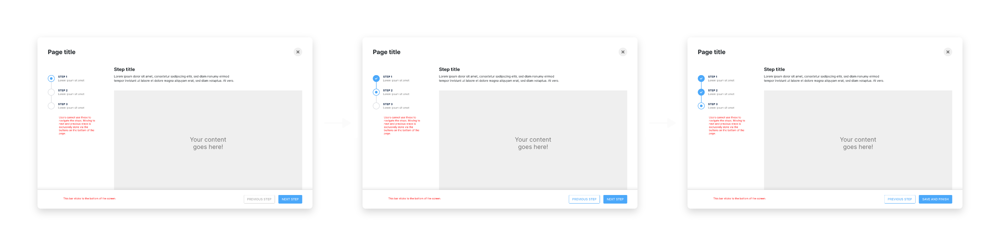
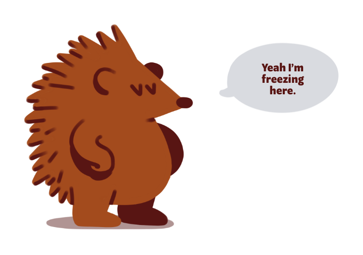

Q3 2020
Making User Testing Fun
Context
During the big web app redesign project of 2020, one of our goals was to introduce to the platform a new, streamlined way for people to create anything — from campaigns to user accounts.
Problem
The goal was quite simple:
As Megan Marketing, I want to be able to easily create anything in order to get value out of the product.
Discovery and ideation
We quickly arrived at a simple solution that was flexible enough to accommodate our needs, we still wanted to put it in front of people to make sure it was bulletproof.
Still, we didn’t want people to focus on the specifics of what the test would have them do, so my Product Manager (hi Emma!) and I put our thinking hats on to try and find a way to make them focus on the builder itself.
We quickly agreed that the test should involve creating something that’s not on the platform — but what? And can we make it something fun, so that people enjoy taking part in the test and feel more at ease going through it?
And then we remembered the hedgehog, the company’s unofficial mascot: what if the test was picking the right outfit for our mascot?
I put some illustrations together and built the prototype. At this point we had many of the components needed for this UI, so we were able to do a relatively high fidelity prototype for people to play with.
We defined a goal and put it in front of people. Can you complete this task?
Can you complete the task? Click the icon on the bottom left if you need a reminder of what the goal is.
Outcome
We got a lot of positive feedback during the sessions and ended up making some changes to reflect some of the feedback we got (mostly to do with how we handle skipping steps).
Still, the biggest outcome of these sessions for me was that user testing doesn't have to be boring. 😁